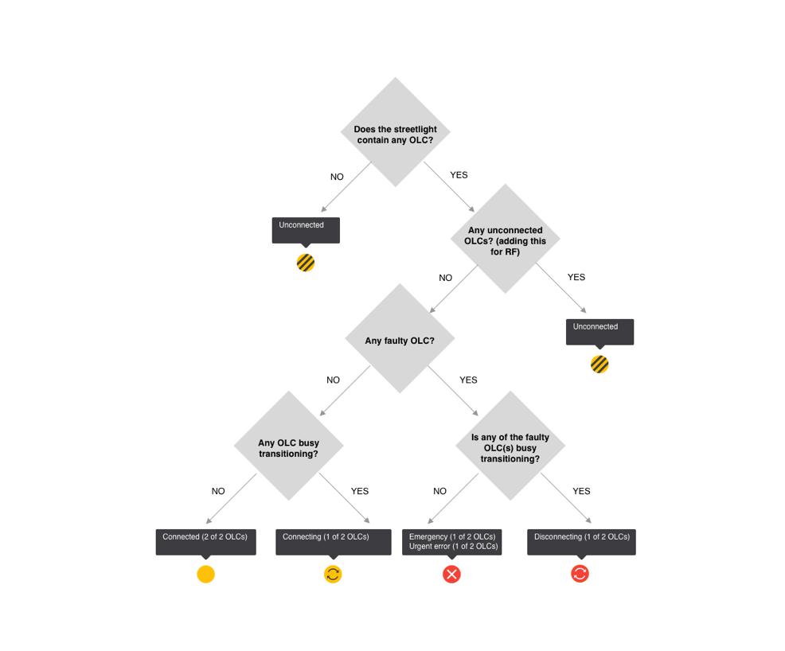
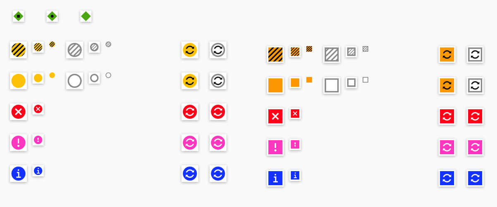
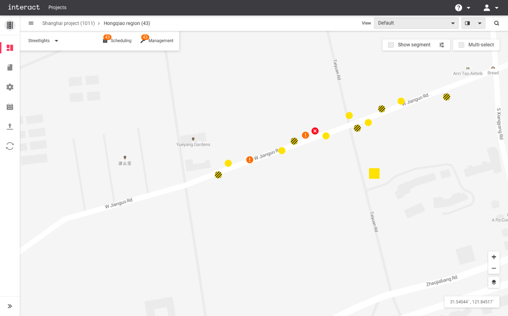
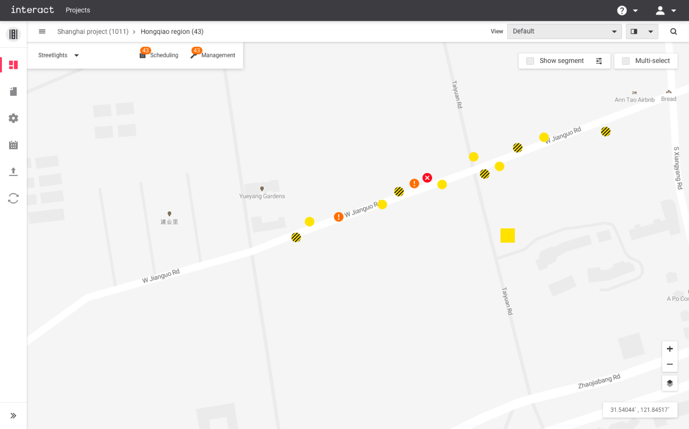
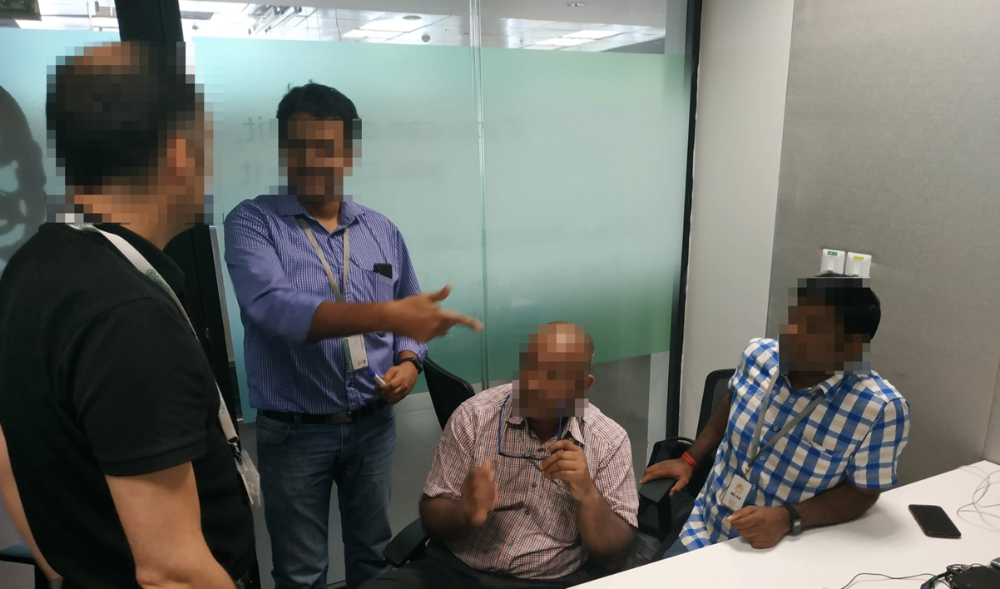
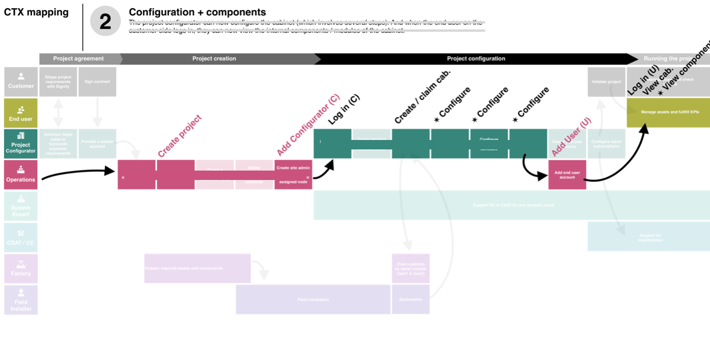
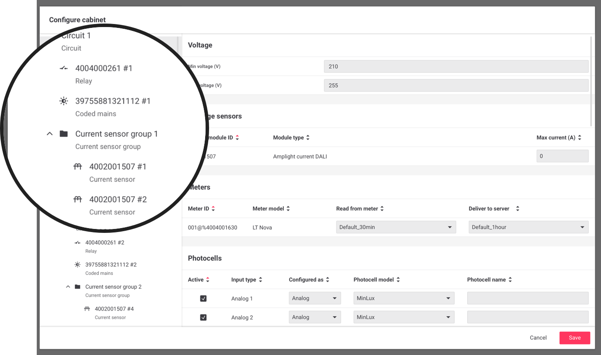
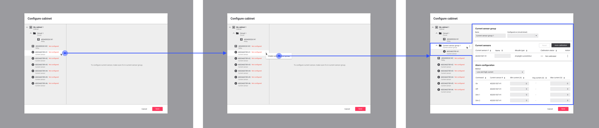
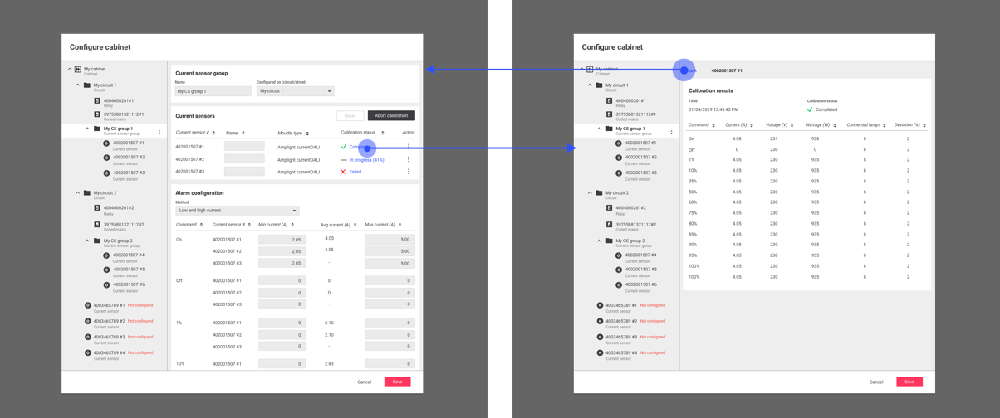
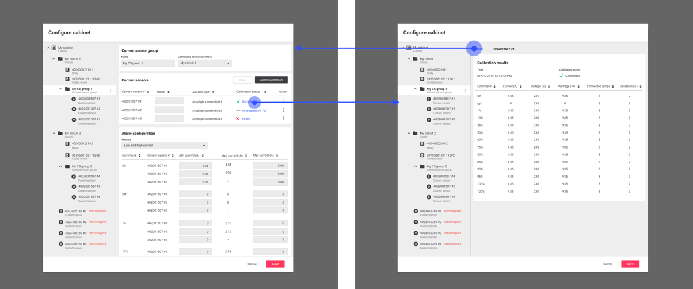

Make Cities Smarter
Connected lighting system for cities
Designer: Jaeyong Lee (IxD), Fabrice Dubois (IxD), Wen Lan Dai (VD)
Roles: Interaction design, User research, Usability test
Note: To comply with my non-disclosure agreement, I have omitted and obfuscated confidential information in this case study. The information in this case study is my own and does not necessarily reflect the views of Philips Lighting.
What's 'Interact City'?
Interact City, connected LED lighting system and management software, provides you with a robust infrastructure to improve city services, improve citizen safety, beautify public spaces, engage with citizens and encourage civic pride. It also reduces the costs of cities by optimizing energy utilization. Sensors on each lamppost help to gain insights into problems of the city to respond more quickly and accurately. Currently, the product connects over 2 million light points across 57 countries around the globe.
People around the product
As a B2B software for the public segment, Interact City involves multiple stakeholders and end-users. Needless to say, no stakeholders are less imperative, but the focus of the design was more on the end-user side who are using the software every day: controlling, monitoring, and dealing with problems.
 Stakeholder map
Stakeholder map
One of the interesting aspects of B2B product is that customer-side users are not the only ‘End-Users'. Practically, many internal employees are supporting clients’ projects from the beginning to the end: installations, configurations, project setups, fault analyses, maintenances, etc. Sometimes, they’re even more involved in the daily usage of the software than the actual end-users. This was an important insight before designing the interface of the software - the design team should listen from not only the customer end-users but also internal end-users to make ‘User-centered design'
My roles
My role as a Interaction Designer was in translations of complex and technical challenges into more human-centric and coherent design solutions. While working in the agile software development process, I collaborated with cross-functional teams on a daily basis, especially PMs, POs, Architects, System Experts, and developers.
- Working with cross-functional teams by following Scaled Agile Framework (SAFe)
- Framing design challenges from a high-level requirements
- From wireframes to detailed interaction designs with documenting specifications
- Rapid prototyping with usability tests
- User interveiws and observations
Rather than describing the business proposition and general benefits of the product (you can find it on the official website), I would like to highlight key interaction design examples that I worked on, which are representing the core philosophies of the software.
1. Visualizing assets
Before Interact City, Philips Lighting already had a product called CityTouch in the market, which had very powerful and flexible functionalities. Thanks to the great legacy product, lots of knowledge and experiences transferred to Interact City.
One of the core functionalities of CityTouch was visualizing assets on a map, which helps users to visually identify the location of the asset, check the status, and control it. However, thousands of streetlights or cabinets in a city typically contain a vast amount of data, and different users have different needs and workflows, so it was very challenging to communicate and deliver the data correctly with a simple visualization.
More ≠ Better

The way of communicating those complex data was visualizing assets via various icons (see the below). However, this approach created lots of visual distractions, and users couldn’t easily focus on a certain aspect of data. For example, when users are looking for schedule information, they should also see other non-relevant information at the same time. Imagine that 10,000 assets in a city screaming to the users with that information.

The design challenges I tackled were:
- How can we prioritize information effectively and communicate it intuitively?
- How can we provide relevant information to various user types?
- How can we make the interface easy to navigate for different aspects of data?
Validating initial assumptions
User research was mainly conducted via remote interviews with system experts. It was focusing on what the key information that should be displayed on the first-screen is, and how the information could be different according to the roles of users. The design team quickly realized that the current abundance of information would bring confusion, and it likely blocks users' tasks.
Simple, but relevant
 Idea sketches
Idea sketches
After the research, rough ideas had been tested and iterated several rounds. Final design solutions to tackle the pain points of users were providing intuitive, simple and relevant visual information, which are enabled by decision trees, simplified asset visualization, and filters (View modes).
This design/backend invention is currently in the progress of obtaining intellectual property protection.
"Method and system for filtering information in a remotely managed lighting system"
ID: 2019PF80504
Designer: Jaeyong Lee, Fabrice Dubois
Decision trees


This method allows the system which information to visualize based on user input, and as a result, users will see prioritized/most comprehensive asset status information. The method is typically executed by a backend, communicating on the one side with the user interface, and on the other side with one or more OLCs, usually via a gateway.
Asset icons

Asset icons communicate their key messages with shape, color, symbol, and tooltip. The principle of visualization is simple; an asset always contains a shape and background color to indicate the fundamental information, e.g., connected streetlight, but it cannot contain more than 1 symbol in it. This logic works with the decision tree - prioritize the most relevant information and decide what to show. Details are provided via a tooltip, such as how many OLCs that the streetlight contains and what the status of it is. Greater details are shown in other panels when users drill down the asset information, such as fault details and asset properties.
View modes
View modes allow users to focus on a particular aspect of data and support them to continue their tasks. One of the most common use cases would be the scheduling feature. When users tend to schedule a group of streetlights, they need to focus on the task rather than distracted by other information. Changing a view mode from Default to Calendar helps users focus on assets that are only currently running through schedules, and other irrelevant assets become fade-away. By the input of users, the focus can be changed from the Schedule to Connected status, Faults or Events.
 

2. Configuring assets
After installers set up streetlights or cabinets in the field, the system should import the data of the assets, e.g., serial numbers of components, geo coordinates, etc., and configure those assets to make it functionally work. The previous UX workflows involve specific knowledge of system experts to do these tasks, and it required a great amount of effort and time.
 Configuration software
Configuration software
Hypotheses that were collected from PM and System Experts (before user research):
- Too many parameters to configure (no default values offered).
- Not able to replicate the same configuration for multiple cabinets – need repetitive manual input (no cloning function for big projects with hundreds of assets with the same configuration values).
- No guidance on parameters that need to be configured.
- No clear visual feedback on which configuration is missing.
- Parameters are scattered in various tabs and this disconnects the workflows.
- Terminologies are difficult to understand.
Who’re the right target audiences?
While preparing user research activities, the design team realized that the actual configuration tasks are mostly done by System Experts or System Centers who are internal employees of the service provider. The job strongly depended on the skills of the experts, and this was not easy to be done from the end-user sides. In the context of B2B software for multiple user segments in various organizations, often heavy users are from the service provider side rather than the customer. Thus, the design team decided to focus on researching System Experts who support the task for various clients every day, and have deep knowledge of it.
 Photo credit by Jaeyong Lee
Photo credit by Jaeyong Lee
- Primarily, desk research was conducted to understand technical challenges and limitations - Reading technical manuals
- F2F interviews with System Experts, System Architects and PMs
- Demos and observations
Key learnings
As researched on the workflows and the details of the system, identified challenges were highly technical, and the overall configurations required a great amount of manual work from system experts even they’re the people who know everything about it. Also, as the entire system features should be migrated into a new platform: Interact City, many compatibility concerns remained.
“We know what to do, but it takes too much time. Normally it takes 30 to 40 minutes per asset.”
“It’s too difficult to be done by customers, so we help them most of times.”
During an interview session with System Experts
- Information was scattered all around, and details were complexly intertwined with each other. Those details need to be untied and understood thoroughly.
- The system was highly technical and all of those details should keep (just simplifying doesn’t make the system works).
- Information needs to be restructured in a more logical and coherent way.
- The configurations had particular orders. UI design should support seamless workflows to increase efficiency.
- More visual feedback is needed to guide and ensure users.
Make, validate, and learn
Insights from the research were translated into rough sketches, wireframes, and low fidelity prototypes.
 Workflow Idea sketch
Idea sketch
Rapid prototypes were remotely tested by the system experts (followed the usability test framework from Steve Krug). The results highlighted further insights that could make the wireframes better. The design team iterated the process to validate hypotheses and assumptions continuously.
 Usability test with System Experts
Usability test with System Experts
Coherent and seamless workflows
Node tree
One of the design improvements compared to the previous UI was structuring parameters of components by its logical relation with others. Unlike the physical structure of assets, the components need to be configured in logical ways by the specific requirements from cities. Depending on those needs, all assets and components in streets or regions could be configured differently.
To support it, the system should have supported a more intuitive way of designing logical structures. The design team proposed to use ‘Node Tree’ concept instead of separated tabs. By doing so, users could see the overall logical structure at once, could get visual feedback more quickly, and most importantly, build the structure more intuitively and effectively.
 Node tree

 Node tree creation workflow
Node tree creation workflow
Automation
The research result indicated that over 50% of configurations could have been done with right default values regardless of the supported technologies of components. It implied that providing right default values with automatic structures and properties could save tones of time of System Experts that used to be required by every project.
The design team closely collaborated with the development team to figure out what can be done automatically, and what should not be. As a result, for particular assets, up to 80% of configurations are done without any manual work.

 

Wizard
Even though the new design already solved many problems; the system was designed to have an automatic-structure and provide pre-determined default values up to 80% of parameters, there were left-over pain points that could be tackled further. How could users know which parameters they’re missing? How could they know the overall progress of their job at a glance?
The design proposed a concept of Configuration Wizard, which indicates the unfinished tasks with the overall configuration progress in percentages. Users can see the list of tasks they suppose to do from the wizard, and it provides links directly guiding them to the right places. Also, they can decide to dismiss certain tasks; some of the configurations are not supported as a part of requirements so that they can know what are the exact leftover tasks and don’t need to be bothered by irrelevant ones.